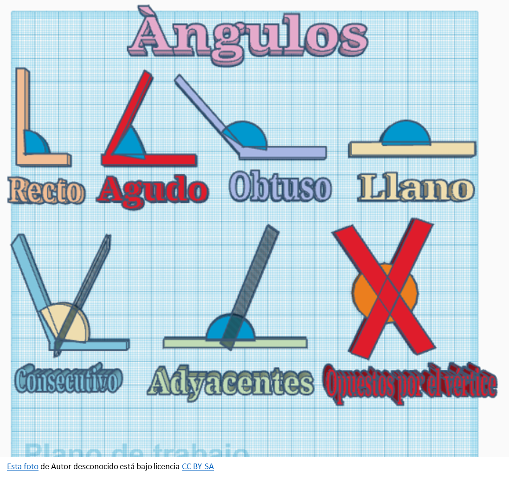

ÁNGULOS
| ¿Qué es un ángulo? |
|
Un ángulo es la figura geométrica formada por dos semirrectas (lados) que comparten un punto común llamado vértice. En esencia, es la abertura entre estas dos semirrectas. Se puede medir en grados, y existen diferentes tipos de ángulos según su medida, como agudos, rectos, obtusos, llanos y completos.  Elementos de un ángulo: Tipos de Ángulos: |